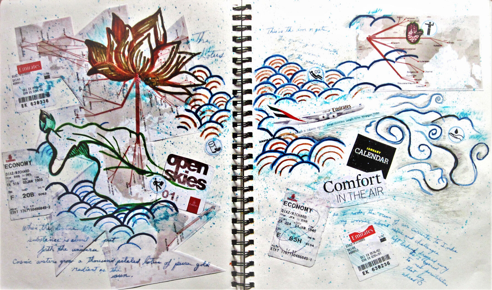

Layers of Flight: A Sky Born Canvas
Cut from Emirates ticket stubs and inky hotel receipts, this collage is a love letter to motion. The lotus blooms not from mud, but from clouds. Its petals are pressed between departures and arrivals. Every torn edge whispers: Migration is messy, but look how we grow wings anyway.

Swimming Through Strange Skies
The figure in the waves isn’t drowning. They’re dancing. Turbulence becomes rhythm; foreign labels, a makeshift map. Those swirling currents? They’re the thrill of a first tuk-tuk ride, the disorientation of spice markets. Comfort isn’t a place. It’s the act of moving through fear.
Ephemera as Evidence & Handwritten Horizons
Train tickets flutter like prayer flags. A coffee stain mirrors the Ganges at dawn. These fragments refuse to be souvenirs. They’re proof of how travel stitches us into the world’s fabric. Hold them to the light: see where your story overlaps with strangers’.
The scribbled notes? They’re the quiet gasps between adventures. "Chai at 3 AM," "Miss home but love this." Collage is alchemy: it turns jetlag into gold, loneliness into compass roses. The real masterpiece isn’t the art it’s the self you meet along the way.
Quotes to Consider & My Closing Invitations
"Journeys are the midwives of thought." — Alain de Botton
...So I say start yours. Pack a sketchbook. Let the sky rewrite you.
"To travel is to take a journey into yourself." — Danny Kaye
...Now go glue something wild into your journal.

Richard Diaz
Art speaks in layers. What meets the eye, how it’s crafted, why it stirs you. Peel them back like petals; the heart of the work waits beneath.